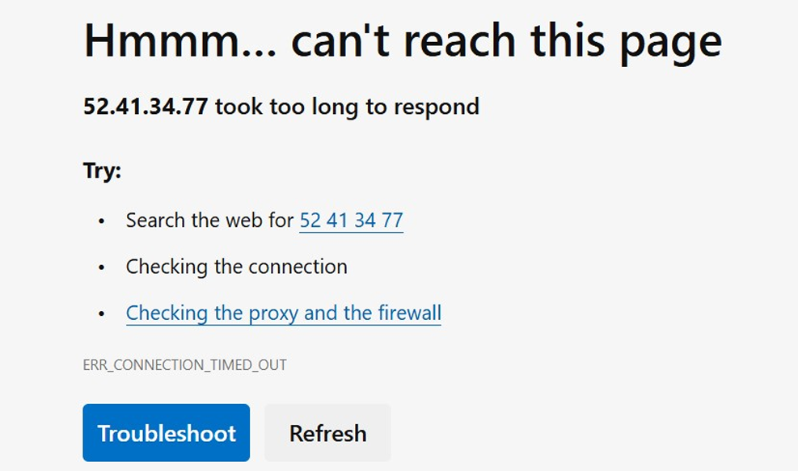

Install httpd to check the status of the httpd service, enter the
following systemctl command in the terminal window, and press Enter: sudo
systemctl status httpd.service
To start the httpd service, enter the following command, and press Enter:
sudo systemctl start httpd.service
To check the status of the httpd service again, enter the following
systemctl command, and press Enter: sudo systemctl status httpd.service
The httpd service is now running. You can find Public IP address on AWS management console in
details section of EC2 instance:
Now check if webserver is working. Open a new web browser, replace with
the public IP of your instance e.g. 52.41.34.77. If you are unable to load
your webserver then you need to investigate the VPC and its resources.
Keep the error that you received when trying to load Apache in the web
browser in mind while troubleshooting this issue.

Click on VPC in the services section of AWS management console. Use the
left navigation pane and check each service within the VPC to confirm that
each resource is configured correctly for example
Subnets - Are the route tables associated to the correct subnets?
Route Tables - Do the route tables have the correct routes?
Internet Gateway - Is there an Internet Gateway and is it attached?
Security Groups and network ACLs - Are the correct rules configured?
I discovered, EC2 instance security group only allows inbound traffic from
SSH at port 22. Security groups. SG inbound rules needs to be amended to
allow HTTP traffic at port 80.
Try to access webserver again. Open a new web browser; enter public IP of
your instance e.g. 52.41.34.77